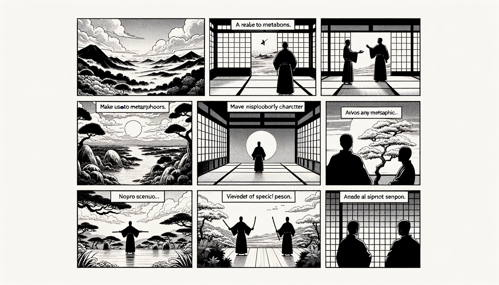

七十五巻 巻一覧
正法眼藏第62 祖師西來意
本紹介ページの導入・語彙・深掘り・クイズは tools/regen_volume_intro_from_corpus.py が OpenAI API で生成したものです（入力は当巻の原文からの短い抜粋のみ）。内容はモデル出力のため、重要箇所は必ず原文・教本と照合してください。
出典: https://shomonji.or.jp/zazen/doc/genzou.html
原文・現代語訳の全文は 全文ページを参照してください。
この巻の紹介（導入）
香嚴寺襲燈大師が示衆に語った内容は、千尺の懸崖にいる人が樹に上り、口は樹枝を㘅み、脚は樹を蹈まず、手は枝を攀じない様子を例に挙げています。
樹下にいる者が如何にして祖師の西来意を問うかという問いに対し、開口して答えれば喪身失命となり、答えなければ所問に違うという難しさを示しています。
語彙の足場
- 懸崖：高くそびえる崖のこと。千尺の懸崖は非常に高い場所を指し、危険な状況を象徴する。
- 樹：木のこと。ここでは、懸崖の上にある樹が象徴的に用いられ、修行や生命の危険を示す。
- 喪身失命：命を失うこと。ここでは、答えることによって自らの命を危うくすることを表現している。
- 西来意：仏教の教えや真理を指す言葉。特に、禅宗の教えの核心を問うことを意味する。
原文（要点の抜粋）
当巻の冒頭付近からの短い抜粋です。長い引用は載せていません。 全文は全文ページを参照してください。出典はリポジトリ内 doc/正法眼蔵.txt です。原文の参照元: https://shomonji.or.jp/zazen/doc/genzou.html
香嚴寺襲燈大師［嗣大潙、諱智閑］示衆云、如人千尺懸崖上樹、口㘅樹枝、脚不蹈樹、手不攀枝。樹下忽有人問、如何是祖師西來意。當恁麼時、若開口答他、卽喪身失命、若不答他、又違他所問。當恁麼時、且道、作麼生卽得（香嚴寺襲燈大師［大潙に嗣す、諱は智閑］示衆に云く、人の千尺の懸崖にして樹に上るが如き、口に樹枝を㘅み、脚は樹を蹈まず、手は枝を攀ぢず。樹下にして忽ち人有つて問はん、如何ならんか是れ祖師西來意と。當恁麼の時、若し口を開いて他に答へば、卽ち喪身失命せん、若し他に答へずは、又他の所問に違す。當恁麼の時、且く道ふべし、作麼生か卽ち得ん）。
時有虎頭照上座、出衆云、上樹時卽不問、未上樹時、請和尚道、如何（時に虎頭の照上座有り、出衆して云く、上樹の時は卽ち問はず、未上樹の時、請すらくは和尚道ふべし、如何）。
師乃呵呵大笑（師、乃ち呵呵大笑す）。
而今の因緣、おほく商量拈古あれど、道得箇まれなり。おそらくはすべて茫然なるがごとし。しかありといへども、不思量を拈來し、非思量を拈來して思量せんに、おのづから香嚴老と一蒲團の功夫あらん。すでに香嚴老と一蒲團上に兀坐せば、さらに香嚴未開口已前にこの因緣を參詳すべし。香嚴老の眼睛をぬすみて覰見するのみにあらず、釋迦牟尼佛の正法眼藏を拈出して覰破すべし。
如人千尺懸崖上樹。
この道、しづかに參究すべし。なにをか人といふ。露柱にあらずは、木橛といふべからず。佛面祖面の破顔なりとも、自己他己の相見あやまらざるべし。いま人上樹のところは盡大地にあらず、百尺竿頭にあらず、これ千尺懸崖なり。たとひ脱落去すとも、千尺懸崖裡なり。落時あり、上時あり。如人千尺懸崖裏上樹といふ、しるべし、上時ありといふこと。しかあれば、向上也千尺なり、向下也千尺なり。左頭也千尺なり、右頭也千尺なり。這裏也千尺なり、那裏也千尺なり。如人也千尺なり、上樹也千尺なり。向來の千尺は恁麼なるべし。且問すらくは、千尺量多少。いはく、如古鏡量なり、如火爐量なり、如無縫塔量なり。
口㘅樹枝。
いかにあらんかこれ口。たとひ口の全闊全口をしらずといふとも、しばらく樹枝より尋枝摘葉しもてゆきて、口の所在しるべし。しばらく樹枝を把拈して口をつくれるあり。このゆゑに全口是枝なり、全枝是口なり。通身口なり、通口是身なり。
樹自踏樹（樹の自ら樹を踏む）、ゆゑに脚不踏樹といふ。脚自踏脚（脚の自ら脚を踏む）のごとし。枝自攀枝（枝の自ら枝を攀づ）、ゆゑに手不攀枝といふ、手自攀手（手の自ら手を攀づ）のごとし。しかあれども、脚跟なほ進歩退歩あり、手頭なほ作拳開拳あり。自他の人家しばらくおもふ、掛虛空なりと。しかあれども、掛虛空それ㘅樹枝にしかんや。
樹下忽有人問、如何是祖師西來意。
この樹下忽有人は、樹裏有人といふがごとし、人樹ならんがごとし。人下忽有人問、すなはちこれなり。しかあれば、樹問樹なり、人問人なり、擧樹擧問なり、擧西來意問西來意なり。問著人また口㘅樹枝して問來するなり。口㘅枝にあらざれば、問著することあたはず。滿口の音聲なし、滿言の口あらず。西來意を問著するときは、㘅西來意にて問著するなり。
若開口答他、卽喪身失命。
図解（4コマ・AI生成）
教義の根拠は原文・出典に従い、漫画は比喩の補助に留めてください。

深掘り（読解の手掛かり）
- 千尺の懸崖にいる人の例えは、修行の難しさを象徴している。
- 樹下の者の問いは、真理を求める人間の姿を表している。
- 開口して答えることの危険性は、禅の教えにおける直感的理解の重要性を示唆している。
- 香嚴寺襲燈大師の教えは、言葉を超えた理解を促すものである。
確認（形成評価）
各設問の下の「採点」で正誤を表示します（ブラウザ内のみ。ログは送りません）。